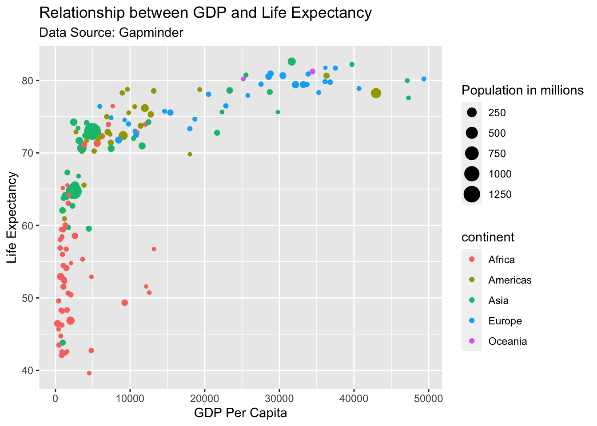

About
This is a dataset of 142 countries, with values for life expectancy,
GDP per capita, and population, every five years, from 1952 to 2007.
Learn more here and watch
this data come alive in this TED
talk by Han’s Rosling.
gapminder %>%
head(10) %>%
knitr::kable(align = "c")
| Afghanistan |
Asia |
1952 |
28.801 |
8425333 |
779.4453 |
| Afghanistan |
Asia |
1957 |
30.332 |
9240934 |
820.8530 |
| Afghanistan |
Asia |
1962 |
31.997 |
10267083 |
853.1007 |
| Afghanistan |
Asia |
1967 |
34.020 |
11537966 |
836.1971 |
| Afghanistan |
Asia |
1972 |
36.088 |
13079460 |
739.9811 |
| Afghanistan |
Asia |
1977 |
38.438 |
14880372 |
786.1134 |
| Afghanistan |
Asia |
1982 |
39.854 |
12881816 |
978.0114 |
| Afghanistan |
Asia |
1987 |
40.822 |
13867957 |
852.3959 |
| Afghanistan |
Asia |
1992 |
41.674 |
16317921 |
649.3414 |
| Afghanistan |
Asia |
1997 |
41.763 |
22227415 |
635.3414 |
Quick Look
The dataset has 1704 rows and 6 columns. The median life expectancy
is
We are using the glue package here to summarize number
of countries in each continent using R code. The chunk
itself is invisible here because we set echo = FALSE but
you can use the download code button above to see the full code.
- Africa has 624 countries
- Americas has 300 countries
- Asia has 396 countries
- Europe has 360 countries
- Oceania has 24 countries
The table below shows how life expectancy varies with continent.
gapminder %>%
filter(year == 2007) %>%
group_by(continent) %>%
summarize(median_life_exp = round(median(lifeExp), 1)) %>%
knitr::kable(align = "c",
col.names = c("Continent",
"Median Life Expectancy"),
caption = "Life Expetancy by Continent")
Life Expetancy by Continent
| Africa |
52.9 |
| Americas |
72.9 |
| Asia |
72.4 |
| Europe |
78.6 |
| Oceania |
80.7 |
GDP vs life expectancy?
In this section we will explore to the question “Do people in wealthy
countries live longer”. For this report we will do the analysis for the
year 2007. If you want to generate similar report for different years
try the parameters
feature of RMarkdown.
gapminder %>%
filter(year == 2007) %>%
ggplot(aes(x = gdpPercap,
y = lifeExp,
color= continent,
size = pop/1000000)) + # population in millions
geom_point()+
labs(x = "GDP Per Capita",
y = "Life Expectancy",
title = "Relationship between GDP and Life Expectancy",
subtitle = "Data Source: Gapminder",
size = "Population in millions")

LS0tCnRpdGxlOiAiR2FwbWluZGVyIERhdGEgUmVwb3J0IgphdXRob3I6ICJNZWVuYWtzaGkgS3VzaHdhaGEiCmRhdGU6ICIyMDIyLTA5LTE1IgpvdXRwdXQ6IAogIGh0bWxfZG9jdW1lbnQ6CiAgICB0b2M6IHRydWUKICAgIHRvY19mbG9hdDogdHJ1ZQogICAgY29kZV9mb2xkaW5nOiBoaWRlCiAgICBjb2RlX2Rvd25sb2FkOiB0cnVlCiAgICB0aGVtZTogZmxhdGx5Ci0tLQoKYGBge3Igc2V0dXAsIGluY2x1ZGU9RkFMU0V9CmtuaXRyOjpvcHRzX2NodW5rJHNldChlY2hvID0gVFJVRSkKbGlicmFyeShnYXBtaW5kZXIpCmxpYnJhcnkodGlkeXZlcnNlKQpsaWJyYXJ5KGdsdWUpCmBgYAoKIyMgQWJvdXQKClRoaXMgaXMgYSBkYXRhc2V0IG9mIDE0MiBjb3VudHJpZXMsIHdpdGggdmFsdWVzIGZvciBsaWZlIGV4cGVjdGFuY3ksIEdEUCBwZXIgY2FwaXRhLCBhbmQgcG9wdWxhdGlvbiwgZXZlcnkgZml2ZSB5ZWFycywgZnJvbSAxOTUyIHRvIDIwMDcuIExlYXJuIG1vcmUgW2hlcmVdKGh0dHBzOi8vd3d3LmdhcG1pbmRlci5vcmcvZGF0YS9kb2N1bWVudGF0aW9uLykgYW5kIHdhdGNoIHRoaXMgZGF0YSBjb21lIGFsaXZlIGluIHRoaXMgW1RFRCB0YWxrXShodHRwczovL3d3dy50ZWQuY29tL3RhbGtzL2hhbnNfcm9zbGluZ190aGVfYmVzdF9zdGF0c195b3VfdmVfZXZlcl9zZWVuP2xhbmd1YWdlPWVuKSBieSBIYW4ncyBSb3NsaW5nLgoKCmBgYHtyIHN1bW1hcnl9CmdhcG1pbmRlciAlPiUgCiAgaGVhZCgxMCkgJT4lIAprbml0cjo6a2FibGUoYWxpZ24gPSAiYyIpCmBgYAoKCiMjIFF1aWNrIExvb2sKClRoZSBkYXRhc2V0IGhhcyBgciBucm93KGdhcG1pbmRlcilgIHJvd3MgYW5kIGByIG5jb2woZ2FwbWluZGVyKWAgY29sdW1ucy4gVGhlIG1lZGlhbiBsaWZlIGV4cGVjdGFuY3kgaXMgCgpXZSBhcmUgdXNpbmcgdGhlIGBnbHVlYCBwYWNrYWdlIGhlcmUgdG8gc3VtbWFyaXplIG51bWJlciBvZiBjb3VudHJpZXMgaW4gZWFjaCBjb250aW5lbnQgdXNpbmcgYFJgIGNvZGUuIFRoZSBjaHVuayBpdHNlbGYgaXMgaW52aXNpYmxlIGhlcmUgYmVjYXVzZSB3ZSBzZXQgYGVjaG8gPSBGQUxTRWAgYnV0IHlvdSBjYW4gdXNlIHRoZSBkb3dubG9hZCBjb2RlIGJ1dHRvbiBhYm92ZSB0byBzZWUgdGhlIGZ1bGwgY29kZS4gCgpgYGB7ciByZXN1bHRzID0gJ2FzaXMnLCBlY2hvPUZBTFNFfQpnYXBtaW5kZXIgJT4lIAogIGNvdW50KGNvbnRpbmVudCkgJT4lIAogIGdsdWVfZGF0YSgiLSAge2NvbnRpbmVudH0gaGFzIHtufSBjb3VudHJpZXMiKSAlPiUgCiAgZ2x1ZV9jb2xsYXBzZShzZXAgPSAiIFwgXG4iKQpgYGAKClRoZSB0YWJsZSBiZWxvdyBzaG93cyBob3cgbGlmZSBleHBlY3RhbmN5IHZhcmllcyB3aXRoIGNvbnRpbmVudC4gCgoKYGBge3J9CmdhcG1pbmRlciAlPiUgCiAgZmlsdGVyKHllYXIgPT0gMjAwNykgJT4lIAogIGdyb3VwX2J5KGNvbnRpbmVudCkgJT4lIAogIHN1bW1hcml6ZShtZWRpYW5fbGlmZV9leHAgPSByb3VuZChtZWRpYW4obGlmZUV4cCksIDEpKSAlPiUgCiAga25pdHI6OmthYmxlKGFsaWduID0gImMiLCAKICAgICAgICAgICAgICAgY29sLm5hbWVzID0gYygiQ29udGluZW50IiwgCiAgICAgICAgICAgICAgICAgICAgICAgICAgICAgIk1lZGlhbiBMaWZlIEV4cGVjdGFuY3kiKSwKICAgICAgICAgICAgICAgY2FwdGlvbiA9ICJMaWZlIEV4cGV0YW5jeSBieSBDb250aW5lbnQiKQogIApgYGAKCgojIyBHRFAgdnMgbGlmZSBleHBlY3RhbmN5PwoKSW4gdGhpcyBzZWN0aW9uIHdlIHdpbGwgZXhwbG9yZSB0byB0aGUgcXVlc3Rpb24gIkRvIHBlb3BsZSBpbiB3ZWFsdGh5IGNvdW50cmllcyBsaXZlIGxvbmdlciIuIEZvciB0aGlzIHJlcG9ydCB3ZSB3aWxsIGRvIHRoZSBhbmFseXNpcyBmb3IgdGhlIHllYXIgMjAwNy4gSWYgeW91IHdhbnQgdG8gZ2VuZXJhdGUgc2ltaWxhciByZXBvcnQgZm9yIGRpZmZlcmVudCB5ZWFycyB0cnkgdGhlIFtwYXJhbWV0ZXJzXShodHRwczovL3JtYXJrZG93bi5yc3R1ZGlvLmNvbS9sZXNzb24tNi5odG1sKSBmZWF0dXJlIG9mIFJNYXJrZG93bi4KCmBgYHtyIHBsb3R9CmdhcG1pbmRlciAlPiUgCiAgZmlsdGVyKHllYXIgPT0gMjAwNykgJT4lIAogIGdncGxvdChhZXMoeCA9IGdkcFBlcmNhcCwgCiAgICAgICAgICAgICB5ID0gbGlmZUV4cCwgCiAgICAgICAgICAgICBjb2xvcj0gY29udGluZW50LCAKICAgICAgICAgICAgIHNpemUgPSBwb3AvMTAwMDAwMCkpICsgIyBwb3B1bGF0aW9uIGluIG1pbGxpb25zCiAgZ2VvbV9wb2ludCgpKwogIGxhYnMoeCA9ICJHRFAgUGVyIENhcGl0YSIsCiAgICAgICB5ID0gIkxpZmUgRXhwZWN0YW5jeSIsCiAgICAgICB0aXRsZSA9ICJSZWxhdGlvbnNoaXAgYmV0d2VlbiBHRFAgYW5kIExpZmUgRXhwZWN0YW5jeSIsCiAgICAgICBzdWJ0aXRsZSA9ICJEYXRhIFNvdXJjZTogR2FwbWluZGVyIiwgCiAgICAgICBzaXplID0gIlBvcHVsYXRpb24gaW4gbWlsbGlvbnMiKQogIApgYGAK